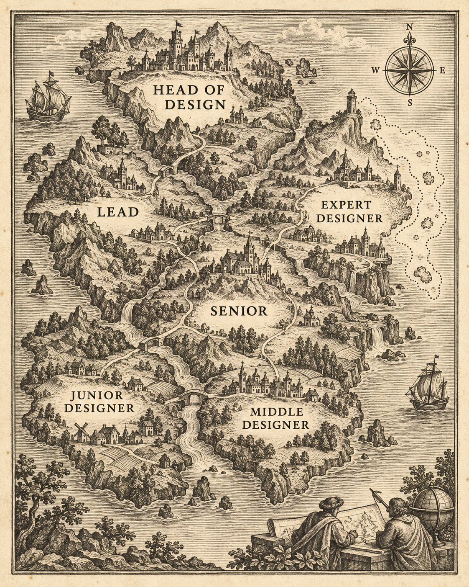
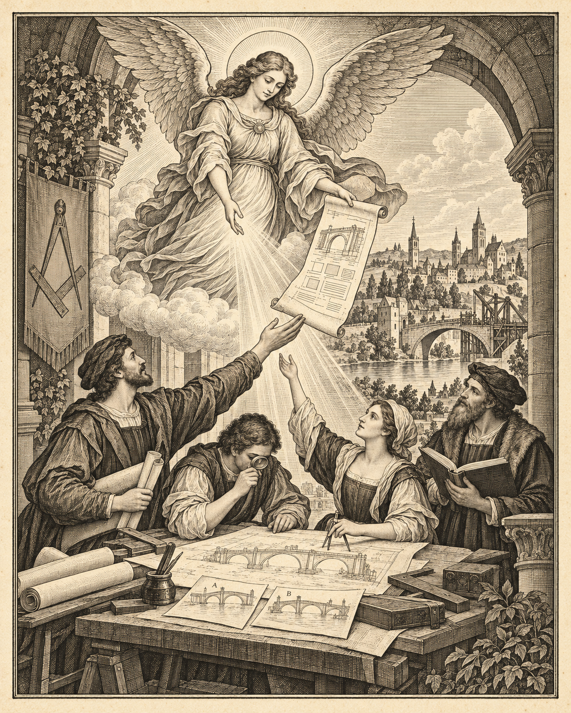
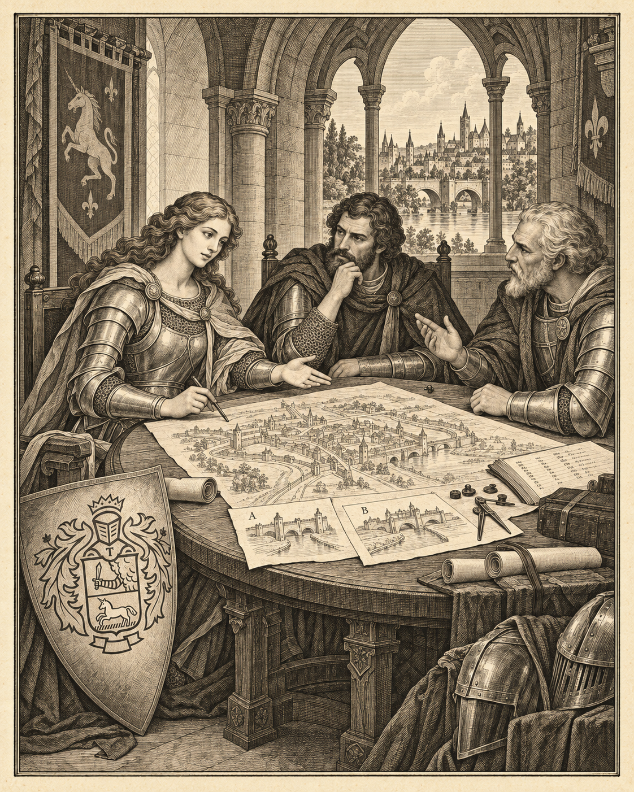
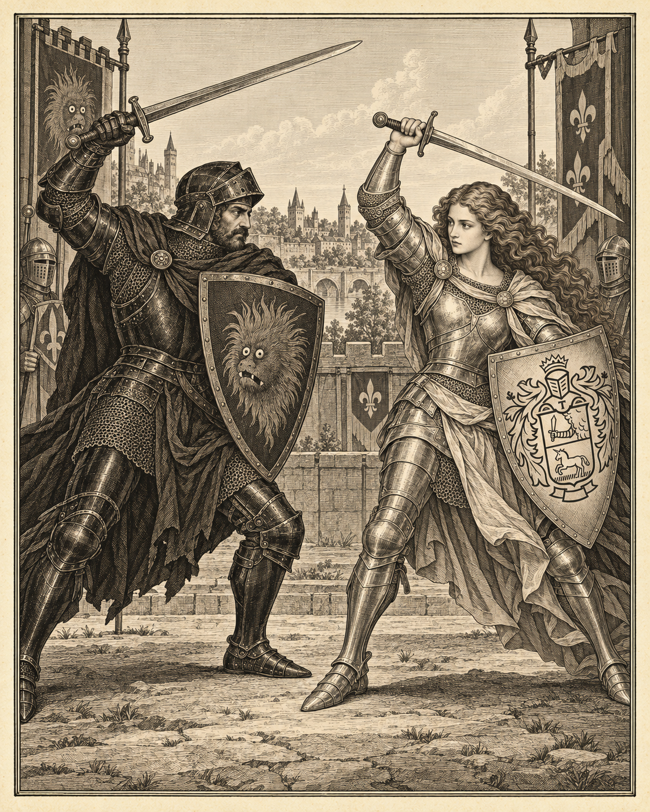
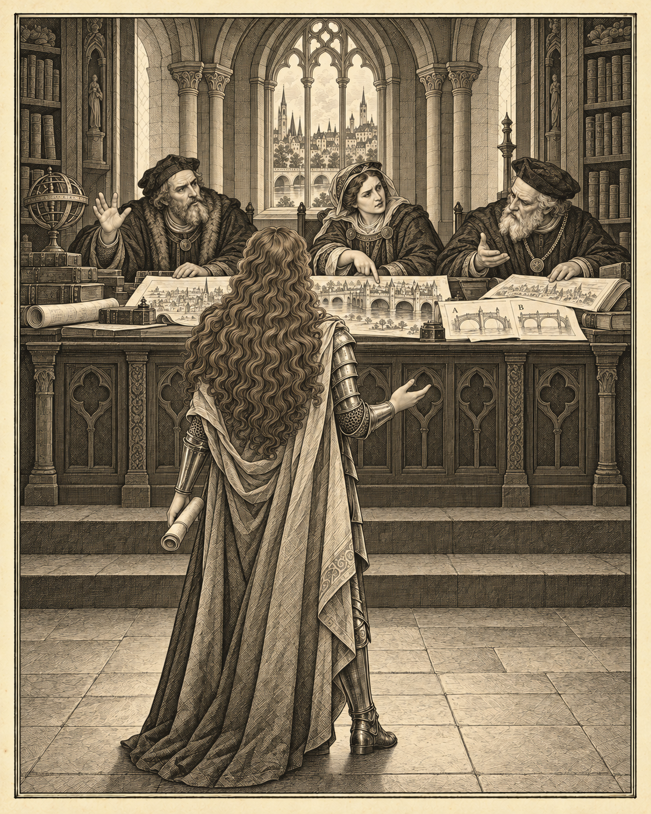

I. История возникновения
Карта дизайнерских земель.
Открыть главу в книге
II. Добродетели эксперта
Видение, мастерство и польза для общего дела.
Открыть главу в книге
III. Рыцари круглого стола
Разные роли в общем деле. Та же героиня, герб на щите и варианты A/B на пергаменте.
Открыть главу в книге
IV. Испытание боем
Отстоять замысел и довести его до результата.
Открыть главу в книге

V. Перед советом ордена
Защита мастерства: реальные работы, аргументы и обсуждение.
Открыть главу в книге